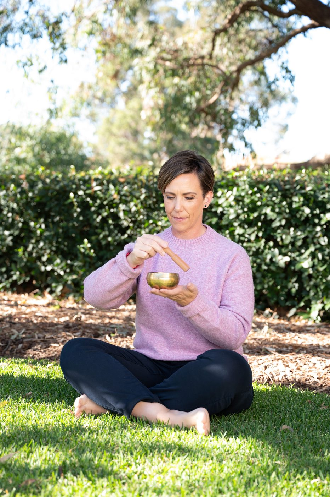

Kinesiology uses the body to answer questions that words often cannot reach. If something in you has been circling, pulling, refusing to be ignored — this is the work that finally listens.

Most of us have spent years trying to think our way through things that live far beneath thinking. We understand our patterns intellectually. We know, on some level, why we keep arriving in the same place. And yet knowing does not always shift things.
Emotions & Metaphysical Kinesiology — EMK — bypasses the thinking mind entirely and goes straight to the source. Using muscle testing as a biofeedback tool, it asks the body directly what it needs, what it is holding, and where the stress actually lives. The body does not edit itself the way the mind does. It simply responds.
"Muscle testing is a way of asking the body directly — and letting it answer in its own language, beneath the noise of the thinking mind."
"I use the body to answer questions that you may not be able to put into words. It will tell me what your words aren't."
"The answers are already inside you. They have always been there. The body has simply been waiting for someone to finally ask the right questions."
Anita Gibbons · Barefoot Kinesiologist · on the unbecoming
Every session is different because every woman is different. But here is what the shape of the work generally looks like, so you know what to expect before you arrive.
We start with a conversation. Not a clinical intake, but a real one. We talk about what is present for you right now, what you might want to work on, and how you want to feel when we are done. There is no right answer and no pressure to have it figured out. Often the most important thing that surfaces in a session is something a woman did not even know she was carrying when she arrived.
Before the deeper work begins, Anita runs through some pre-checks to get a clear picture of the body's current state. She then begins checking the energy systems within the body to find where to start. The body guides this, not a script. It shows her where the stress is sitting, where there is an imbalance, and where the work is ready to begin.
As imbalances and stresses surface, Anita looks for what the body needs as a remedy. This might be an essential oil, a flower essence, a crystal, or an affirmation. Throughout the session she checks in with you — asking what is resonating, what is coming up, what feels true. Nothing is worked through in silence. You are present and part of the process the entire time.
Every session closes with care. Anita brings your energy back to present time and the space between you is closed with intention. Then she discusses any home reinforcements — practices, prompts or activities to support what has been opened in the session. You leave held. You leave supported. That is always the intention.
This is the question almost every new client has, and it is a good one. Because all sessions are online, Anita uses herself as the surrogate for muscle testing. This means she uses her own body to access and interpret the information from yours. It sounds unusual, and the first time you encounter it, it might seem impossible.
Within kinesiology, this is understood as working through the body's energy systems rather than physical touch, and surrogate testing is a long-established practice in the field. In Anita's own experience — and in the experience of the women she works with — online sessions feel every bit as clear and meaningful as sitting in the same room. Like all kinesiology, it is a complementary practice, and the best way to understand it is to feel it for yourself.
You do not need to do anything differently. You just need to be present, open, and willing to notice what arises.
Anita wishes someone had told her these things before she began. So here they are, plainly.
That is one of the most common things women say after a session. Even a heavy, emotionally full session tends to end in lightness. Something has been moved. Something that was stuck is no longer sitting exactly where it was. The mind may not have language for it yet. The body already knows.
If you are holding deep trauma, you do not need to be afraid of it surfacing before you are ready. It often is not what comes up first. The body is wise about this. It works on what you are ready for, in the order that is right for you. The deeper work is approached slowly, with care, and only when you feel safe enough to go there.
It is often the small things that bring a woman to her first session. A feeling she cannot name. A pattern she is tired of. A sense that something is off but she cannot point to exactly what. That is more than enough to begin. The body will fill in the rest.
This is not something done to you. It is something done with you. Anita follows the body's lead entirely. If something is not ready to be worked on, the body simply will not go there. You are safe the entire time, and you are always part of the conversation.
"Even if you are holding something heavy, you do not have to be afraid of it. The body is wiser than that. It will only ever take you as far as you are ready to go."
If you have been circling the same feelings, patterns or situations for longer than feels right — Emotions & Metaphysical Kinesiology may be the thing that reaches what other approaches have not. It is particularly powerful for women who understand themselves intellectually but find that understanding alone is not enough to shift things.
You do not. Anita has worked with sceptics who arrived unconvinced and left surprised. The body does not require belief to tell the truth. All that is needed is a willingness to be present and an openness to notice what arises. You can hold your questions lightly and see what happens.
You have been feeling the pull. You have been reading, wondering, circling. That is not indecision — that is you getting ready. When you are, Anita is here.
Send Anita a note and she will be in touch personally when a space opens — or sooner, if you have questions.
I’m interested in…No pressure, no obligation. Anita will be in touch personally.
Anita will be in touch personally when a space opens — or sooner if you have questions. In the meantime, keep exploring.